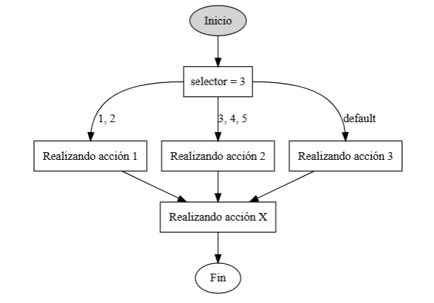

Selector de Acciones
Escribe un programa que pida al usuario un número entero y realice una acción diferente dependiendo del número, usando la estructura if-else if-else.

Requisitos
- Pide al usuario un número con el texto:
"Introduce un número selector (entero): ". - Usa
Scannerpara leer el número. - Si el número es 1 o 2, imprime
"Realizando acción 1". - Si el número está entre 3 y 5 (ambos incluidos), imprime
"Realizando acción 2". - Para cualquier otro número, imprime
"Realizando acción 3". - Al final, sin importar la condición, imprime siempre
"Realizando acción X".
Ejemplo de uso esperado
Introduce un número selector (entero): 1
Realizando acción 1
Realizando acción X
Introduce un número selector (entero): 4
Realizando acción 2
Realizando acción X
Introduce un número selector (entero): 8
Realizando acción 3
Realizando acción X